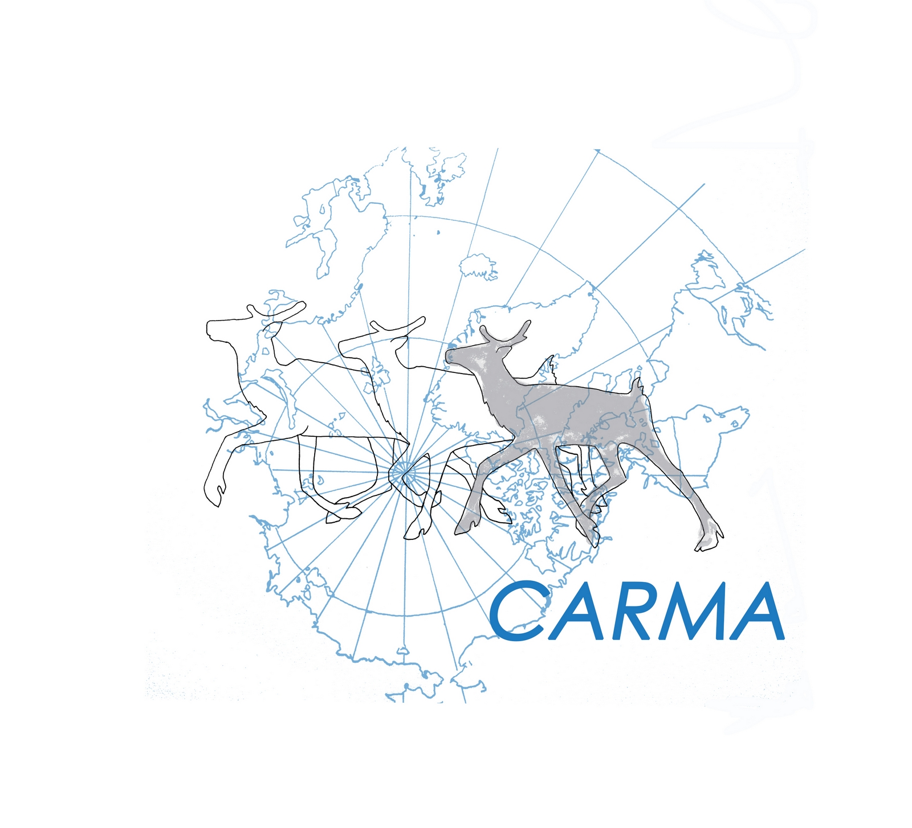
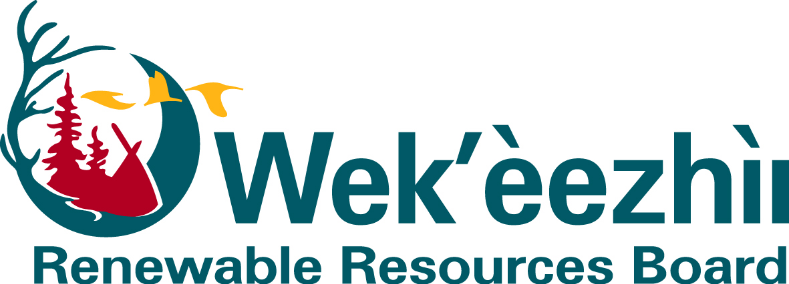

Our partners
National Science Foundation

CircumArctic Rangifer Monitoring & Assessment Network


Arthouse Studio
Caribou and reindeer (Rangifer tarandus) are perhaps the single most important terrestrial species for both ecological and human systems in the Arctic. With a circumpolar Arctic distribution and high abundance, they play an essential ecological role as herbivores in the slow-growing tundra and as food for predators, scavengers, and humans alike. Their migrations, spanning the northern edges of the boreal forests and the Arctic barrens of the tundra, are the largest terrestrial movements in the world.
The Fate of the Caribou Project is a collaborative research group focused on furthering our understanding of how caribou and the ecosystems and communities that rely on them are affected by climate change and human development. Funded by the National Science Foundation Navigating the New Arctic initiative, we couple cutting edge science and technology with Traditional and Local Ecological Knowledge (TLEK) to inform community-lead stewardship of caribou and to quantify climate-induced changes in caribou distributions to guide land use decision making.
Across Alaska and Canada, there are roughly eleven distinct herds of migratory caribou, shown above (no data available for the Central Arctic Herd in north-central Alaska). While the migration routes and ranges of some herds do overlap, herds can be distinguished by their separate calving grounds, the area a herd returns to annually to have their calves. Each year, these caribou migrate hundreds to thousands of miles from their winter range, then calving grounds, summer range, and back to their winter range. As they move across the landscape, caribou graze on lichens, grasses, and shrubs, but they also bring an influx of nutrients as they defecate or die, spreading nitrogen, calcium, and other resources.
As human development spreads and the climate warms, caribou migration routes and ranges are changing. While caribou populations fluctuate naturally, some herds have experienced catastrophic population crashes in recent decades, thought to be caused by a combination of climate change-related factors and human influence. Our research seeks to understand how caribou, people, and climate change interact to help land managers and caribou stewards ensure a future for caribou in Canada and Alaska.
National Science Foundation
CircumArctic Rangifer Monitoring & Assessment Network
created with
Website Builder Software .